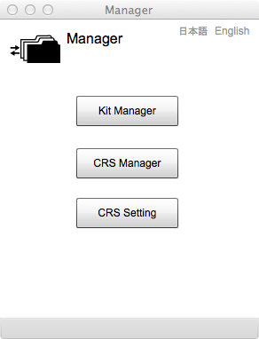

Manager
Introduction
There are three buttons on Manager page.
The first is "Kit manager" is a geospatial data clearinghouse for the management of kits using metadata. Geospatial data clearinghouse is defined as a distributed network of geospatial data producers, managers, and users linked electorionically [Executive Order 12906 Coordinating Geographic Data Acquisition and Access: The National Spatial Data Infrastructure, April 11, 1994].In case of gittok, it is a local mechanizum of management and acess to dataset using metadata. Metadata is data about data. It explains the data, for example, title, overview, author, publishing date, geographical extent of the data.
The second is "CRS manager" for management of Coordinate Reference Systems (CRS). CRS is a reference to represent the position on Earth by coordinate such as (x,y) and (longitude, latitude).
The third button is used to set CRS with kit. Coordinates in the kit may be converted to orther coordinates of different coordinate system using CRS. For example,you will be able to convert from screen coordinate to plane rectanglar coordinate and then to geodetic coordinate (lat, lon).
Manager UI

Button
Kit Manager
This button activates geospatial data clearinghouse.
CRS Manager
This button activates a manager of Coordinate Reference System.
CRS Setting
This button is for CRS attachment to the kit.
日本語
You can read the tutorial written in Japanese.
English
You can read this page.